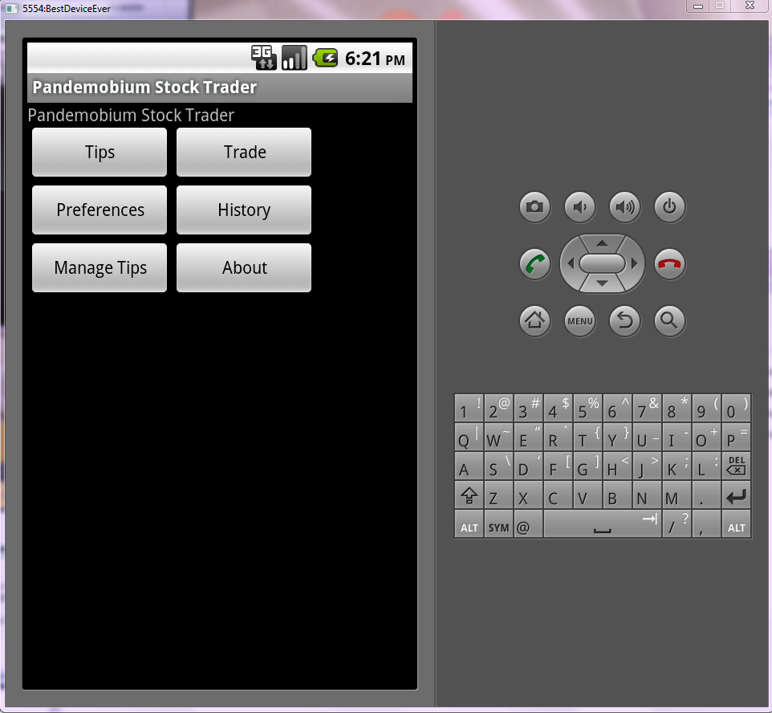
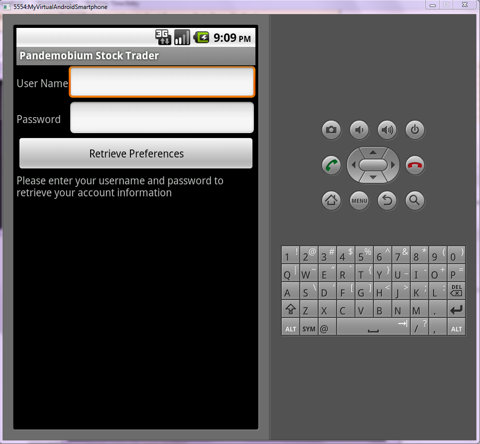
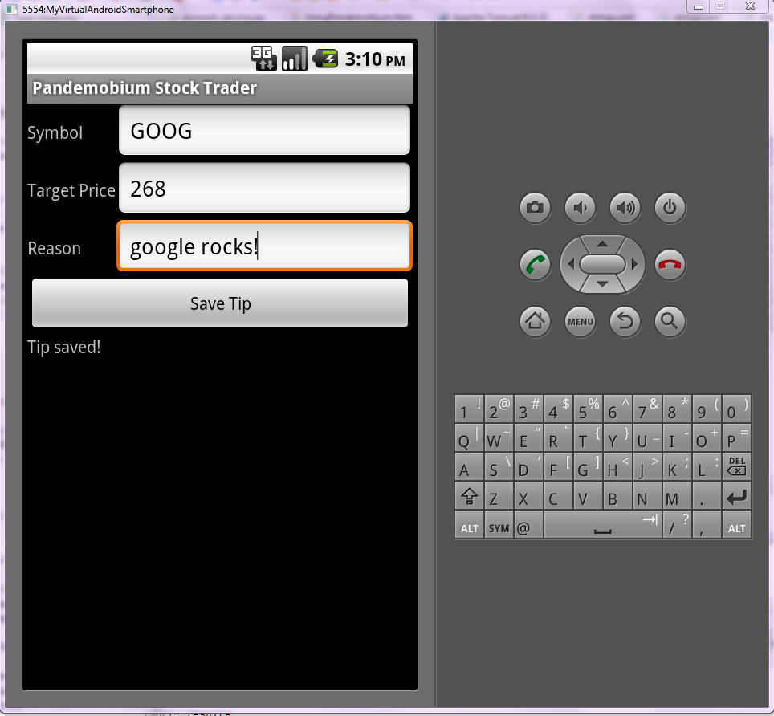
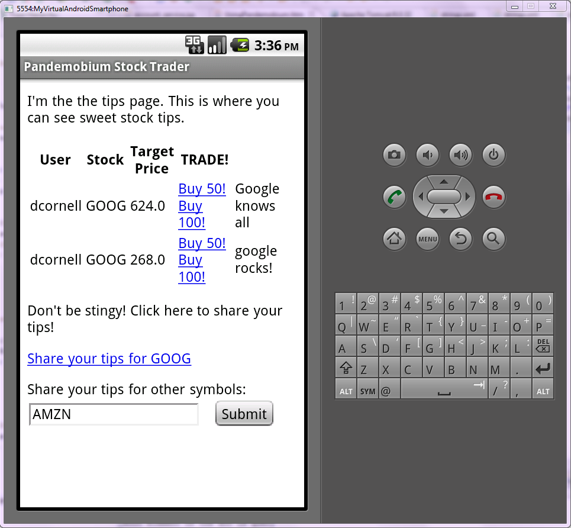
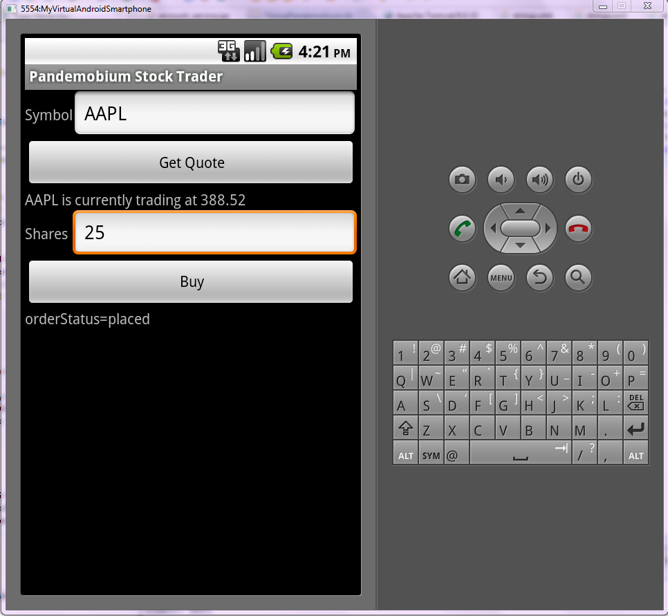
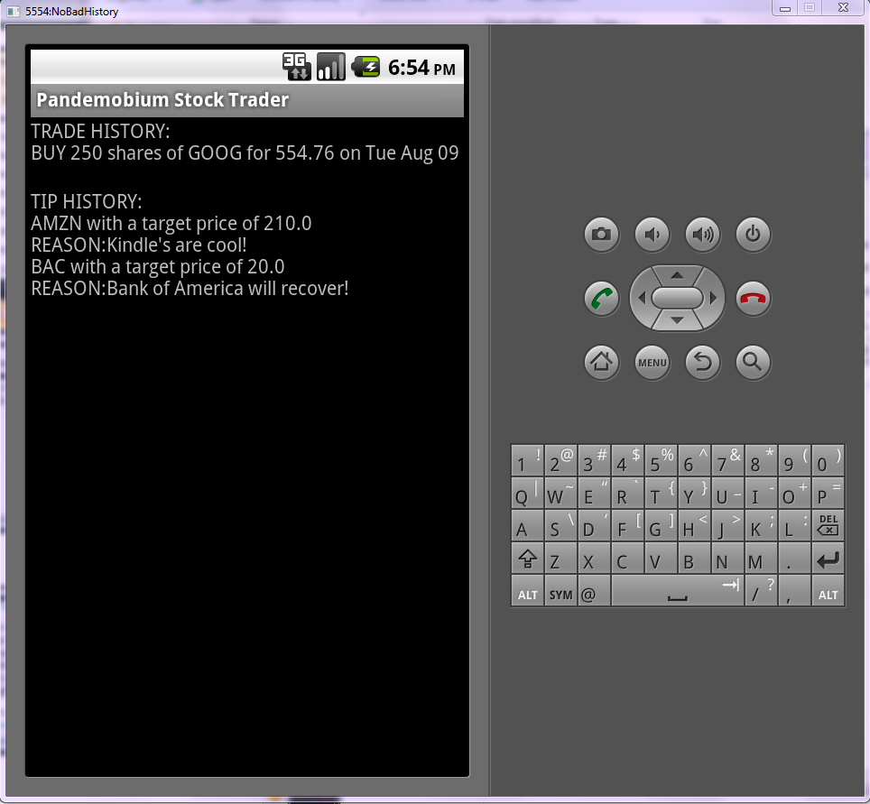

Table of Contents:
1. Upon selecting the PandemobiumStockTrader app icon from the app menu, you will be brought to the main page. Here there are buttons that will take you to the tips page, trade page, preferences page, history page, tip manager page, and the "About the app" page.
2. Whenever you need to get back to the main screen, select the 'back button' on the ride-hand side of you emulator. It looks like this:
3. First you need to login so your tips will be saved to the database. Click the preferences button and enter in your username and password here:
4. Now you can add a tip. Click "Manage My Tips" and add a stock symbol, a target stock price, and a reason for this target here:
5. Click "Save Tip" to save the tip to the database. To share this tip, go back to the PandemobiumStockTrader home page, and select "Tips". Enter the symbol of any tip you have saved, and the tip, along with the username of the tip creator, will appear here:
6. To get a stock quote or to buy stock, click the "Trade" button on the main page. Enter the stock symbol and number of shares to purchase here:
7. To review all purchases and tips created, click the "History"" button on the main page. Your tip and purchase history should look something like this:
